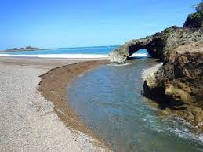
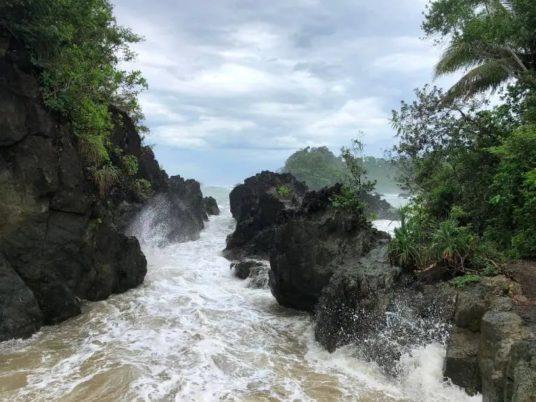
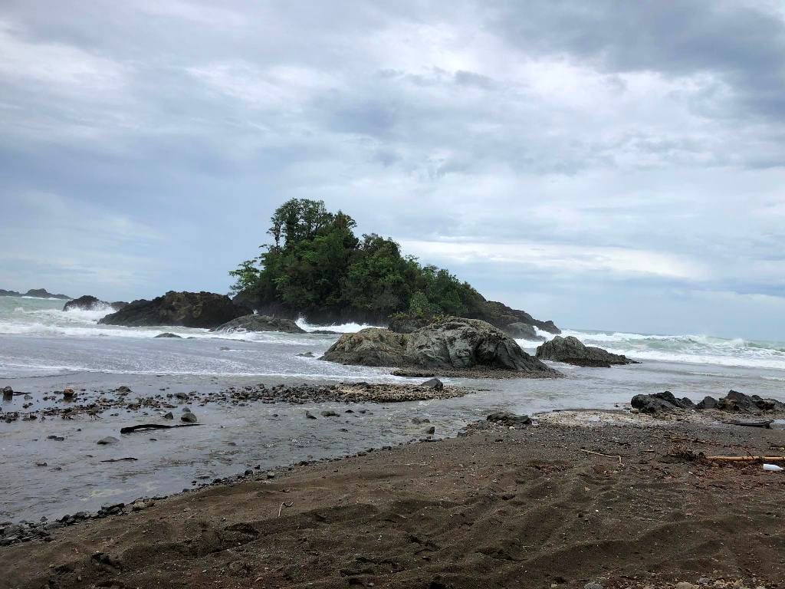

Overview
The site showcases dramatic coastal cliffs, a natural rock arch, and a small inlet perfect for swimming. The dark, smooth pebble beach and clear ocean waters make it ideal for sightseeing, photography, and nature observation.
Masanga Point is a striking coastal landmark in General Nakar, Quezon, featuring a natural rock arch carved over centuries by the Pacific waves. It offers panoramic ocean views and a secluded spot for swimming when the sea is calm.

The site showcases dramatic coastal cliffs, a natural rock arch, and a small inlet perfect for swimming. The dark, smooth pebble beach and clear ocean waters make it ideal for sightseeing, photography, and nature observation.

Masanga Point is located in Barangay Canaway, General Nakar. Visitors can reach the site by road from the town proper, followed by a short walk toward the coast. Motorcycle or private vehicles are recommended for easier access along rugged coastal paths.

<